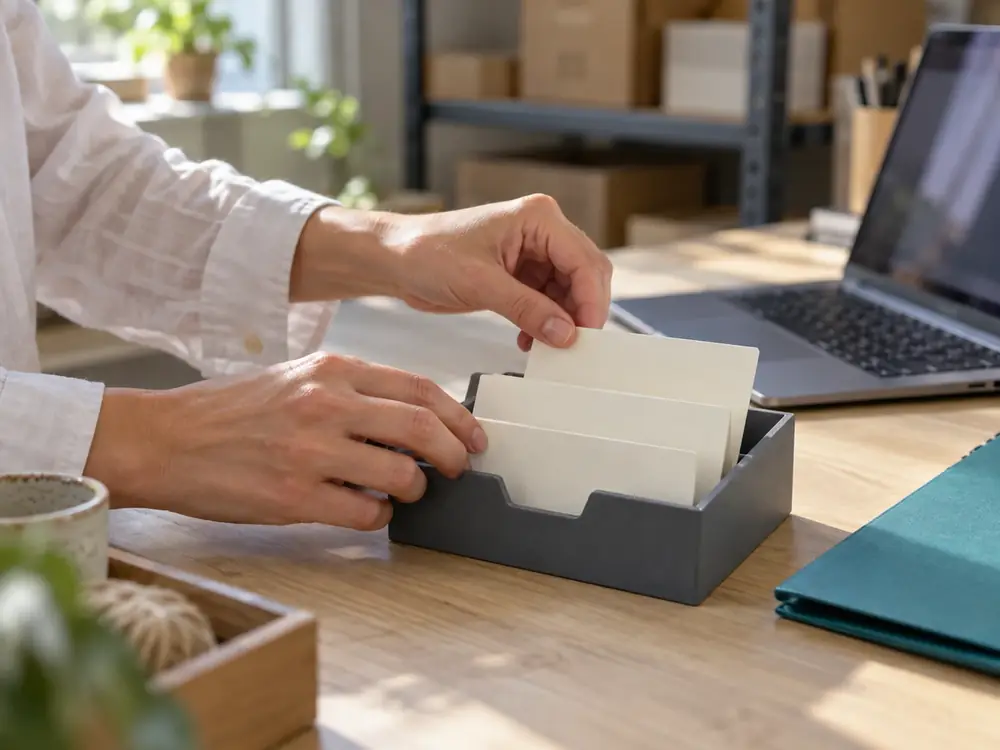

A列 A 問い合わせ
問い合わせの列
受け取った問い合わせを貼り付けて1行にし、返事の状態を付けます。未返信の行が上に残ります。
メールの自動取り込みはできません。
全プラン
01機能／ 8つの機能と、できないこと
機能ごとに、できること・できないこと・使えるプランを1行で並べています。
選んだ内容はこのページの中だけで使い、どこにも送りません。何も選ばなければ、8件すべてを表示します。
8件すべて
A列 A 問い合わせ
受け取った問い合わせを貼り付けて1行にし、返事の状態を付けます。未返信の行が上に残ります。
メールの自動取り込みはできません。
全プラン
B列 B 予約
日時・人数・メモを1行で記録し、日ごとの一覧で見られます。時間の重なりはその場で表示されます。
代金の受け取り（決済）はできません。
全プラン
B列 B 予約
お客さまが空き枠を見て申し込めるページを作れます。申し込みは予約の列に入ります。
独自のドメイン名は使えません。
スタンダード
C列 C 在庫
品名・数・置き場所を記録し、予約の行に取り置きとして結びつけます。
バーコードの読み取りはできません。
全プラン
全全列
問い合わせの行を予約の列へ、予約の行に在庫の取り置きを。名前を書き直さずに移せます。
別の台帳どうしの移動はできません。
全プラン
全全列
家族やスタッフを招待し、「編集できる」「見るだけ」を人ごとに分けます。
列や項目ごとの細かい権限は付けられません。
スターター 2人
スタンダード 10人
全全列
表計算から書き出したCSVを、列ごとに取り込みます。項目の対応は画面で選べます。
紙の台帳の読み取りはできません。代行は導入サポート（有料）で。
全プラン
全全列
列ごと・期間ごとに、いつでもCSVで書き出せます。解約後30日間も書き出せます。
書き出したファイルの自動保存先は選べません。
全プラン
当てはまる機能がありません。選択を外すか、お問い合わせください。
「全」は、問い合わせ・予約・在庫のどの列でも使える機能です。

紙や表計算が向いている場面もあります。費用をかけずに1人で記録するなら、紙で十分なこともあります。○ 向いている ／ △ 条件しだい ／ — 向いていない
| 比べること | コトワケ | 紙の台帳・手帳 | 表計算 |
|---|---|---|---|
| 同じ名前を書く回数 | ○1回 | △道具の数だけ | △表の数だけ |
| 予約の重なりに気づく | ○入力したとき | △見返したとき | △自分で式を作れば |
| 複数人で同時に見る | ○人ごとに権限を分けて | —難しい | △共有の設定しだい |
| 外出先で見る | ○ブラウザで | △持ち歩けば | △端末しだい |
| データを持ち出す | ○CSVで書き出し | —書き写す | ○ファイルのまま |
| 費用 | △月額 1,100円から | ○ほぼかからない | ○手持ちのソフトで |
14日間 0円・カード登録なし